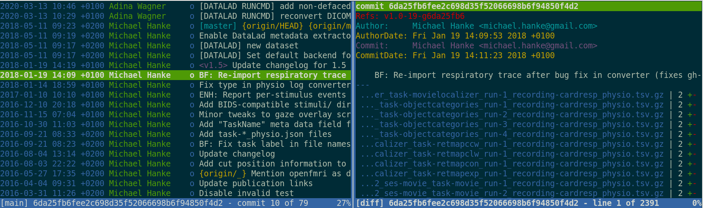
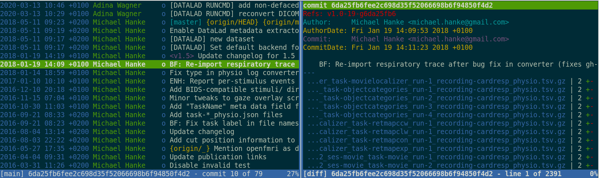
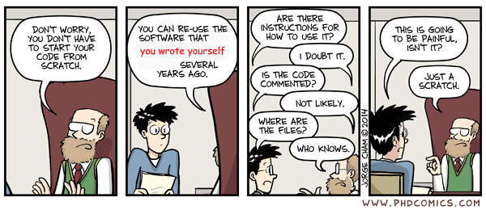
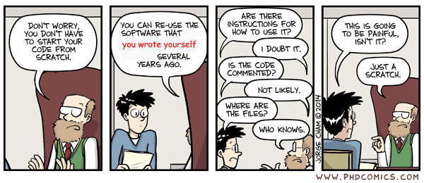
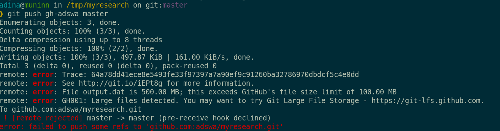

DataLad
Decentralized Management of Digital Objects for Open Science
Adina Wagner
 mas.to/@adswa
mas.to/@adswa |
|
|
Psychoinformatics lab,
Institute of Neuroscience and Medicine, Brain & Behavior (INM-7) Research Center Jülich |
Slides: DOI 10.5281/zenodo.10556597 (Scan the QR code)
files.inm7.de/adina/talks/html/hamburg_2024.html
Acknowledgements
|
Funders


Collaborators
|
improve scientific workflows, coming from the perspective of software distributions and development


DataLad Datasets
A DataLad dataset is a joined Git + git-annex repository
What makes scientific workflows special?
- Scientific building blocks are not static.
- The building blocks of a scientific result are rarely static
| Analysis code, manuscripts, ... evolve (Rewrite, fix bugs, add functions, refactor, extend, ...) |

|

Version control

|
|

- The building blocks of a scientific result are rarely static
| Data changes, too (errors are fixed, data is extended, naming standards change, an analysis requires only a subset of your data...) |


|
Sadly, Git does not handle large files well.


Version control beyond text files
Using git-annex,
DataLad version controls large data


 

Version control beyond text files
- Datasets can have an optional annex for tracking (large) files without placing their content into Git
- For annex'ed files, identity (hash) and location information is put into Git, rather than their content:
- Where the filesystem allows it, annexed files are symlinks:
$ ls -l sub-02/func/sub-02_task-oneback_run-01_bold.nii.gz
lrwxrwxrwx 1 adina adina 142 Jul 22 19:45 sub-02/func/sub-02_task-oneback_run-01_bold.nii.gz ->
../../.git/annex/objects/kZ/K5/MD5E-s24180157--aeb0e5f2e2d5fe4ade97117a8cc5232f.nii.gz/MD5E-s24180157
--aeb0e5f2e2d5fe4ade97117a8cc5232f.nii.gz
- The symlink reveals this internal data organization based on identity hash:
$ md5sum sub-02/func/sub-02_task-oneback_run-01_bold.nii.gz
aeb0e5f2e2d5fe4ade97117a8cc5232f sub-02/func/sub-02_task-oneback_run-01_bold.nii.gz
- The (tiny) symlink instead of the (potentially large) file content is
committed - version controlling precise file identity without checking contents into Git

Version control beyond text files
- Datasets can have an optional annex for tracking (large) files without placing their content into Git
- For annex'ed files, identity (hash) and location information is put into Git, rather than their content:
- File availability information is stored to record a decentral network of file content. A file can exist in multiple different locations.
$ git annex whereis sub-02/func/sub-02_task-oneback_run-01_bold.nii.gz
whereis sub-02/func/sub-02_task-oneback_run-01_bold.nii.gz (2 copies)
8c3680dd-6165-4749-adaa-c742232bc317 -- git@8242caf9acd8:/data/repos/adswa/bidsdata.git [gin]
fff8fdbc-3185-4b78-bd12-718717588442 -- adina@muninn:~/bids-data [here]
ok
Delineation and advantages of decentral versus central RDM: Hanke et al., (2021). In defense of decentralized research data management
Version Control
- DataLad knows two things: Datasets and files


datalad save Version control
- Example: Add a new file into a dataset
- Save the dataset modification...
- ... with DataLad
# create a data analysis script
$ datalad status
untracked: code/script.py (file)
$ git status
On branch master
Untracked files:
(use "git add file..." to include in what will be committed)
code/script.py
nothing added to commit but untracked files present (use "git add" to track)
# create a data analysis script
$ datalad status
untracked: code/script.py (file)
$ git status
On branch master
Untracked files:
(use "git add file..." to include in what will be committed)
code/script.py
nothing added to commit but untracked files present (use "git add" to track)
$ datalad save \
-m "Add a k-nearest-neighbour clustering analysis" \
code/script.py $ git add code/script.py
$ git commit -m "Add a k-nearest-neighbour clustering analysis"$ git annex add code/script.py
$ git commit -m "Add a k-nearest-neighbour clustering analysis"Local version control
Procedurally, version control is easy with DataLad!

- Non-complex DataLad core API (easier than Git)
- Pure Git or git-annex commands (for regular Git or git-annex users, or to use specific functionality)
Stay flexible:
- Save meaningful units of change
- Attach helpful commit messages
Git versus Git-annex
- Data in datasets is either stored in Git or git-annex
- By default, everything is annexed, i.e., stored in a dataset annex

| Git | git-annex |
| handles small files well (text, code) | handles all types and sizes of files well |
| file contents are in the Git history and will be shared upon git/datalad push | file contents are in the annex. Not necessarily shared |
| Shared with every dataset clone | Can be kept private on a per-file level when sharing the dataset |
| Useful: Small, non-binary, frequently modified, need-to-be-accessible (DUA, README) files | Useful: Large files, private files |
What makes scientific workflows special?
- Scientific building blocks are not static.
- Version control beyond text
- Science is build from modular units.
Git submodules
- Built-in Git feature: Add a repository to another repository, treating them as separate projects (e.g., use third party project, but keep commits separate)
Make a project with a submodule:
|
Get a repository with a submodule:
|
Dataset Nesting
- Seamless nesting mechanisms:

- hierarchies of datasets in super-/sub-dataset relationships
- based on Git submodules, but more seamless
- Overcomes scaling issues with large amounts of files
adina@bulk1 in /ds/hcp/super on git:master❱ datalad status --annex -r
15530572 annex'd files (77.9 TB recorded total size)
nothing to save, working tree cleanKeeping a project clean and orderly
|
|
|
|
Keeping a project clean and orderly
First, let's create a new data analysis dataset withdatalad create
$ datalad create -c yoda myanalysis
[INFO ] Creating a new annex repo at /tmp/myanalysis
[INFO ] Scanning for unlocked files (this may take some time)
[INFO ] Running procedure cfg_yoda
[INFO ] == Command start (output follows) =====
[INFO ] == Command exit (modification check follows) =====
create(ok): /tmp/myanalysis (dataset) -c yoda applies useful pre-structuring and configurations:$ tree
.
├── CHANGELOG.md
├── code
│   └── README.md
└── README.md
Intuitive data analysis structure
$ cd myanalysis
# we can install analysis input data as a subdataset to the dataset
$ datalad clone -d . https://github.com/datalad-handbook/iris_data.git input/
[INFO ] Scanning for unlocked files (this may take some time)
[INFO ] Remote origin not usable by git-annex; setting annex-ignore
install(ok): input (dataset)
add(ok): input (file)
add(ok): .gitmodules (file)
save(ok): . (dataset)
action summary:
add (ok: 2)
install (ok: 1)
save (ok: 1)
Intuitive data analysis structure
$ tree
.
├── CHANGELOG.md
├── code
│   ├── README.md
│   └── script.py
└── input
  └── iris.csvSeamless dataset nesting & linkage

$ datalad clone --dataset . https://github.com/datalad-handbook/iris_data.git input/
$ git diff HEAD~1
diff --git a/.gitmodules b/.gitmodules
new file mode 100644
index 0000000..c3370ba
--- /dev/null
+++ b/.gitmodules
@@ -0,0 +1,3 @@
+[submodule "input"]
+ path = input
+ datalad-id = 68bdb3f3-eafa-4a48-bddd-31e94e8b8242
+ datalad-url = https://github.com/datalad-handbook/iris_data.git
diff --git a/input b/input
new file mode 160000
index 0000000..fabf852
--- /dev/null
+++ b/input
@@ -0,0 +1 @@
+Subproject commit fabf8521130a13986bd6493cb33a70e580ce8572
What makes scientific workflows special?
- Scientific building blocks are not static.
- Version control beyond text
- Science is build from modular units.
- Nesting
- Science is exploratory, iterative, multi-stepped, and complex.
Reusing past work isn't necessarily simple
Your past self is the worst collaborator:
 

Leaving a trace
"Shit, which version of which script produced these outputs from which version of what data?"
"Shit, why buttons did I click and in which order did I use all those tools?"


Leaving a trace
datalad run wraps around anything expressed in a command line call and saves the dataset modifications resulting from the execution.
datalad rerun repeats captured executions. If the outcomes differ, it saves a new state of them.
datalad containers-run executes command line calls inside a tracked software container and saves the dataset modifications resulting from the execution.

data analysis provenance
Enshrine the analysis in a script
Here: extract_lc_timeseries.py
$ datalad containers-run \
--message "Time series extraction from Locus Coeruleus"
--container-name nilearn \
--input 'mri/*_bold.nii' \
--output 'sub-*/LC_timeseries_run-*.csv' \
"python3 code/extract_lc_timeseries.py"
-- Git commit --
commit 5a7565a640ff6de67e07292a26bf272f1ee4b00e
Author: Adina Wagner adina.wagner@t-online.de
AuthorDate: Mon Nov 11 16:15:08 2019 +0100
Commit: Adina Wagner adina.wagner@t-online.de
CommitDate: Mon Nov 11 16:15:08 2019 +0100
[DATALAD RUNCMD] Time series extraction from Locus Coeruleus
=== Do not change lines below ===
{
"cmd": "singularity exec --bind {pwd} .datalad/environments/nilearn.simg bash..",
"dsid": "92ea1faa-632a-11e8-af29-a0369f7c647e",
"inputs": [
"mri/*.bold.nii.gz",
".datalad/environments/nilearn.simg"
],
"outputs": ["sub-*/LC_timeseries_run-*.csv"],
...
}
^^^ Do not change lines above ^^^
---
sub-01/LC_timeseries_run-1.csv | 1 +
...
data analysis provenance
Record code execution together
with
input-data, output files and software
environment in the
execution-command
$ datalad containers-run \
--message "Time series extraction from Locus Coeruleus"
--container-name nilearn \
--input 'mri/*_bold.nii' \
--output 'sub-*/LC_timeseries_run-*.csv' \
"python3 code/extract_lc_timeseries.py"
-- Git commit --
commit 5a7565a640ff6de67e07292a26bf272f1ee4b00e
Author: Adina Wagner adina.wagner@t-online.de
AuthorDate: Mon Nov 11 16:15:08 2019 +0100
Commit: Adina Wagner adina.wagner@t-online.de
CommitDate: Mon Nov 11 16:15:08 2019 +0100
[DATALAD RUNCMD] Time series extraction from Locus Coeruleus
=== Do not change lines below ===
{
"cmd": "singularity exec --bind {pwd} .datalad/environments/nilearn.simg bash..",
"dsid": "92ea1faa-632a-11e8-af29-a0369f7c647e",
"inputs": [
"mri/*.bold.nii.gz",
".datalad/environments/nilearn.simg"
],
"outputs": ["sub-*/LC_timeseries_run-*.csv"],
...
}
^^^ Do not change lines above ^^^
---
sub-01/LC_timeseries_run-1.csv | 1 +
...
data analysis provenance
Result: machine readable record about which data, code, and
software produced a result how, when, and why.
$ datalad containers-run \
--message "Time series extraction from Locus Coeruleus"
--container-name nilearn \
--input 'mri/*_bold.nii' \
--output 'sub-*/LC_timeseries_run-*.csv' \
"python3 code/extract_lc_timeseries.py"
-- Git commit --
commit 5a7565a640ff6de67e07292a26bf272f1ee4b00e
Author: Adina Wagner adina.wagner@t-online.de
AuthorDate: Mon Nov 11 16:15:08 2019 +0100
Commit: Adina Wagner adina.wagner@t-online.de
CommitDate: Mon Nov 11 16:15:08 2019 +0100
[DATALAD RUNCMD] Time series extraction from Locus Coeruleus
=== Do not change lines below ===
{
"cmd": "singularity exec --bind {pwd} .datalad/environments/nilearn.simg bash..",
"dsid": "92ea1faa-632a-11e8-af29-a0369f7c647e",
"inputs": [
"mri/*.bold.nii.gz",
".datalad/environments/nilearn.simg"
],
"outputs": ["sub-*/LC_timeseries_run-*.csv"],
...
}
^^^ Do not change lines above ^^^
---
sub-01/LC_timeseries_run-1.csv | 1 +
...
data analysis provenance
Use the unique identifier of the execution record
$ datalad rerun 5a7565a640ff6de67
[INFO ] run commit 5a7565a640ff6de67; (Time series extraction from Locus Coeruleus)
[INFO ] Making sure inputs are available (this may take some time)
get(ok): mri/sub-01_bold.nii (file)
get(ok): mri/sub-02_bold.nii (file)
[...]
[INFO ] == Command start (output follows) =====
[INFO ] == Command exit (modification check follows) =====
add(ok): sub-01/LC_timeseries_run-*.csv(file)
add(ok): sub-02/LC_timeseries_run-*.csv (file)
[...]
action summary:
add (ok: 30)
get (ok: 30)
save (ok: 2)
unlock (ok: 30)
data analysis provenance
... to have a machine recompute and verify past work
$ datalad rerun 5a7565a640ff6de67
[INFO ] run commit 5a7565a640ff6de67; (Time series extraction from Locus Coeruleus)
[INFO ] Making sure inputs are available (this may take some time)
get(ok): mri/sub-01_bold.nii (file)
get(ok): mri/sub-02_bold.nii (file)
[...]
[INFO ] == Command start (output follows) =====
[INFO ] == Command exit (modification check follows) =====
add(ok): sub-01/LC_timeseries_run-*.csv(file)
add(ok): sub-02/LC_timeseries_run-*.csv (file)
[...]
action summary:
add (ok: 30)
get (ok: 30)
save (ok: 2)
unlock (ok: 30)
Lack of provenance can be devastating
- Data analyses typically start with data wrangling:
- Move/Copy/Rename/Reorganize/... data
- Mistakes propagate through the complete analysis pipeline - especially those early ones are hard to find!

Example: "Let me just copy those files..."
- Researcher builds an analysis dataset and moves
events.tsvfiles (different per subject) to the directory with functional MRI data
$ for sourcefile, dest in zip(glob(path_to_events), # note: not sorted!
glob(path_to_fMRI_subjects)): # note: not sorted!
destination = path.join(dest, Path(sourcefile).name)
shutil.move(sourcefile, destination)Researcher shares analysis with others
üò±
- organized
- knowledgeable
- experienced

Everyone makes mistakes - the earlier we find them or guard against them, the better for science!
Leave a trace!
$ datalad run -m "Copy event files" \
"for sub in eventfiles;
do mv ${sub}/events.tsv analysis/${sub}/events.tsv;
done"
$ datalad copy-file ../eventfiles/sub-01/events.tsv sub-01/ -d .
copy_file(ok): /data/project/coolstudy/eventfiles/events.tsv [/data/project/coolstudy/analysis/sub-01/events.tsv]
save(ok): /data/project/coolstudy/analysis (dataset)
action summary:
copy_file (ok: 1)
save (ok: 1)Research data management is tied to reproducibility

What makes scientific workflows special?
- Scientific building blocks are not static.
- Version control beyond text
- Science is build from modular units.
- Nesting
- Science is exploratory, iterative, multi-stepped, and complex.
- Provenance
- Science is collaborative.
Interoperability
- Scientific workflows can be idiosyncratic across institutions / departments / labs / any two scientists

Decentral operation, also for annexed files
Sadly, Git does not handle large files well.
And repository hosting services refuse to handle large files: 

Publishing datasets
- Most public datasets separate content in Git versus git-annex behind the scenes


Interoperability
- DataLad is built to maximize interoperability and streamline routines across hosting and storage technology

Publishing datasets
-
Seamless connections:
- Datasets are exposed via a private or public repository on a repository hosting service
- Data can't be stored in the latter, but can be kept in almost any third party storage
-
Publication dependencies automate interactions to both places, e.g.,
$ git config --local remote.github.datalad-publish-depends gdrive # or $ datalad siblings add --name origin --url git@github.com:adswa/exp-data.git --publish-depends s3

Publishing datasets
Special case 1: repositories with annex support

Publishing datasets
Special case 2: Special remotes with repositories

Transport logistics
- Share data like source code


Transport logistics: Lots of data, little disk-usage
- Cloned datasets are lean. "Meta data" (file names, availability) are present, but no file content:
$ datalad clone git@github.com:psychoinformatics-de/studyforrest-data-phase2.git
install(ok): /tmp/studyforrest-data-phase2 (dataset)
$ cd studyforrest-data-phase2 && du -sh
18M .$ datalad get sub-01/ses-movie/func/sub-01_ses-movie_task-movie_run-1_bold.nii.gz
get(ok): /tmp/studyforrest-data-phase2/sub-01/ses-movie/func/sub-01_ses-movie_task-movie_run-1_bold.nii.gz (file) [from mddatasrc...]# eNKI dataset (1.5TB, 34k files):
$ du -sh
1.5G .
# HCP dataset (~200TB, >15 million files)
$ du -sh
48G . (Raw) data mismanagement
- Multiple large datasets are available on a compute cluster üèû
- Each researcher creates their own copies of data ⛰
- Multiple different derivatives and results are computed from it üèî
- Data, copies of data, half-baked data transformations, results, and old versions of results are kept - undocumented üåã
Example: eNKI dataset
- Raw data size: 1.5 TB
- + Back-up: 1.5 TB
- + A BIDS structured version: 1.5 TB
- + Common, minimal derivatives (fMRIprep): ~ 4.3TB
- + Some other derivatives: "Some other" x 5TB
- + Copies of it all or of subsets in home and project directories
Example: eNKI dataset

"Can't we buy more hard drives?"
No.
DataLad way
- Download the data, have a back-up
- Transform it into a DataLad dataset
$ datalad create -f .
$ datalad save -m "Snapshot raw data"$ datalad create my_enki_analysis
$ datalad clone -d . /data/enki dataWhat makes scientific workflows special?
- Scientific building blocks are not static.
- Version control beyond text
- Science is build from modular units.
- Nesting
- Science is exploratory, iterative, multi-stepped, and complex.
- Provenance
- Science is collaborative.
- Transport logistics
Examples of what DataLad can be used for:
- Publish or consume datasets via GitHub, GitLab, OSF, the European Open Science Cloud, or similar services
Examples of what DataLad can be used for:
- Behind-the-scenes infrastructure component for data transport and versioning (e.g., used by OpenNeuro, brainlife.io , the Canadian Open Neuroscience Platform (CONP), CBRAIN)

Examples of what DataLad can be used for:
- Creating and sharing reproducible, open science: Sharing data, software, code, and provenance

Examples of what DataLad can be used for:
- Creating and sharing reproducible, open science: Sharing data, software, code, and provenance

Examples of what DataLad can be used for:
- Central data management and archival system

Examples of what DataLad can be used for:
- Scalable computing framework for reproducible science


Command summaries
Summary - Local version control
datalad createcreates an empty dataset.- Configurations (-c yoda, -c text2git) add useful structure and/or configurations.
- A dataset has a history to track files and their modifications.
- Explore it with Git (git log) or external tools (e.g., tig).
datalad saverecords the dataset or file state to the history.- Concise commit messages should summarize the change for future you and others.
datalad statusreports the current state of the dataset.- A clean dataset status (no modifications, not untracked files) is good practice.
Summary - Dataset consumption & nesting
datalad cloneinstalls a dataset.- It can be installed “on its own”: Specify the source (url, path, ...) of the dataset, and an optional path for it to be installed to.
- Datasets can be installed as subdatasets within an existing dataset.
- The --dataset/-d option needs a path to the root of the superdataset.
- Only small files and metadata about file availability are present locally after an install.
- To retrieve actual file content of annexed files,
datalad getdownloads file content on demand. - Datasets preserve their history.
- The superdataset records only the version state of the subdataset.
Summary - Reproducible execution
datalad runrecords a command and its impact on the dataset.- All dataset modifications are saved - use it in a clean dataset.
- Data/directories specified as
--inputare retrieved first. - Use one flag per input.
- Data/directories specified as
--outputwill be unlocked for modifications prior to a rerun of the command. - Its optional to specify, but helpful for recomputations.
datalad containers-runcan be used to capture the software environment as provenance.- Its ensures computations are ran in the desired software set up. Supports Docker and Singularity containers
datalad reruncan automatically re-execute run-records later.- They can be identified with any commit-ish (hash, tag, range, ...)
Take home messages
- Science has specific requirements that can impede efficiency and reproducibility.
- DataLad is one of many tools in an ecosystem of resources, infrastructure, and experts to assist you.
- DataLad sits on top of, and complements Git and git-annex.
- Even outside of science, data deserves version control.
- It changes and evolves just like code, and exhaustive tracking lays a foundation for reproducibility.
- Data management with tools like Git or DataLad can feel technical and complex.
- But effort pays off: Increased transparency, better reproducibility, easier accessibility, efficiency through automation and collaboration, streamlined procedures for synchronizing and updating your work, ...
- The biggest beneficiary of RDM? Yourself
- The second biggest beneficiary of RDM? Yourself in 6 months
- The consequence of good RDM? Better science
Further resources and stay in touch
- Reach out to to the DataLad team or contribute via
- Matrix (free, decentralized communication app, no app needed). We run a weekly Zoom office hour (Tuesday, 4pm Berlin time) from this room as well.
- The development repository on GitHub
- Reach out to the (Neuro-) user community with
- A question on neurostars.org
with a
dataladtag - Find more user tutorials or workshop recordings
- On DataLad's YouTube channel
- In the DataLad Handbook
- In the DataLad RDM course
- In the Official API documentation
- In an overview of most tutorials, talks, videos at github.com/datalad/tutorials
Thanks for your attention

Slides at DOI 10.5281/zenodo.10556597
|
Women neuroscientists are underrepresented in neuroscience. You can use the Repository for Women in Neuroscience to find and recommend neuroscientists for conferences, symposia or collaborations, and help making neuroscience more open & divers. |